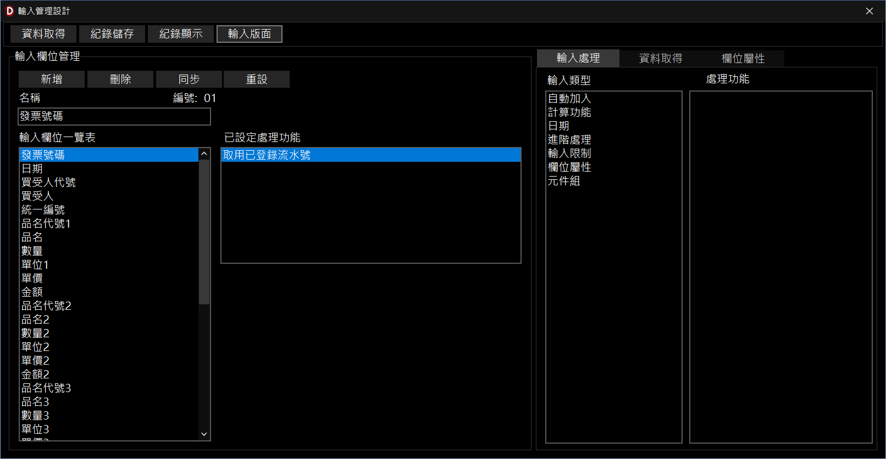

輸入介面設計
本頁用來設定表單的輸入欄位、處理規則、資料查詢及顯示樣式，讓資料輸入流程符合實際作業需求。
畫面功能
-
輸入欄位管理：新增、刪除、重新命名及調整欄位順序。
- 欄位功能：查看目前欄位已套用的處理或查詢功能。
-
輸入處理：依數值、金額、字串或日期選擇驗證與處理功能。
-
資料查詢：從指定資料表加入查詢功能，協助帶入或核對資料。
- 欄位屬性：設定字型、大小、顏色、底色及對齊方式。

輸入介面設計畫面
基本操作
- 在左側「輸入欄位一覽表」選取要設定的欄位。
- 切換右側「輸入處理」或「資料查詢」，選擇需要的功能。
- 雙擊功能，或將功能拖曳至「欄位功能」清單，即可套用。
- 在「欄位功能」清單拖曳項目可調整執行順序；雙擊項目可移除功能。
- 如需修改外觀，切換至「欄位屬性」完成設定。
欄位管理
- 新增欄位：建立自訂輸入欄位，再輸入欄位名稱。
- 刪除欄位：刪除選取欄位及其相關設定。
- 顯示全部：列出尚未加入畫面的可用欄位。
-
重設：清除目前的輸入欄位設定。執行前請確認是否仍需保留既有處理功能。
進階設定
畫面下方可進入「查詢設計」、「記錄存檔」、「紀錄顯示」及「介面設計」，分別設定查詢條件、存檔方式、紀錄顯示規則與欄位位置。
操作提醒
- 功能執行順序會影響處理結果，調整後請實際測試輸入流程。
- 刪除欄位或重設會影響既有設定，請先確認提示訊息再執行。